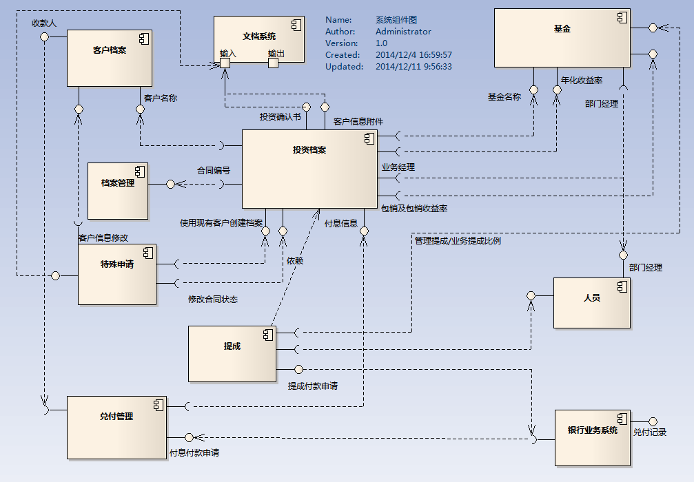

金赛银基金管理项目
项目的需求和背景
深圳金赛银基金管理有限公司是一家以产业基金、并购基金等发行与管理为主营业务的专业基金管理机构。随着公司业务规模的扩展， 对IT的需求是日渐增多的：
过去纸质的档案管理效率低下，档案的存储查询/借阅非常不便；
业务人员提成无法及时查询，基金兑付的计算需要快速准确地反映到客户，项目投资中投资汇款和收款记录巨大， 里面的利息计算规则更是复杂，人工计算很容易犯错；
内部融资项目混乱，经常出现跨阶段跨部门操作的操作；
对购买基金的客户返款经常出现延迟；
以上的种种情况都需要一个内部的平台， 一方面能管理基金业务，一方面协调各部门从寻找项目到最终签订合同协同规范的工作，保证业务能快速，准确，安全的运作。
实施完的效果
档案管理
以前的档案都是纸质的，档案的量非常大，用户需要专门用一个房间存放档案，查找档案更是麻烦，其他非财务部门查找档案， 还得先到财务部找人帮忙查等不便之处。
自动化文档输出
尽管有了电子化的档案管理，还是需要实物文档备案的，以前这个文档都是通过整理一份work文档，然后打印的， 现在系统可以自动准备好这份和word类似文档供用户打印。
业务员的提成
现在的提成是可以实时查询的
流程固化/规范化
现在的金赛银的业务运转模式越来越清晰了，从部门的划分可见：项目部（内部又分为项目投资银行部，资金管理部，项目三部）， 财务部，法务部，还有风控和总裁，一般还会和外部的第三方法律机构打交道， 从提供融资到基金募资，需要每一个部门协作完成，对流程节点的规范性要求越来越高，由此需要流程控制去规范落实每一个环节。
定时提醒功能
待办事项
数据集中化
流程过程中的数据不会再遗留在具体的部门上，参考历史数据变得方便
财务数据自动化
- A。自动计算收益
- B。收款确认自动化：以往确认哪个客户往基金账户汇款是需要人工确认的。
- C。转账操作自动化
数据统计
- A。资金池情况
- B。营利情况
- C。经营分析
实现方案和实施情况
这个系统虽然业务上去看具有一定的普遍性，但实质是一个根据客户内部的逐渐稳定的业务和工作模式进行深度定制的系统， 化繁为简。系统需要和OA评审，银行支付做对接，以及财务系统做对接，是企业信息化的产物。
如图，系统的构建路线是：
基金-》投资档案-》档案管理-》提成-》兑付-》银行业务系统-》财务凭证
项目创建流程-》OA对接-》过程中的收支明细-》项目结算
系统管理-》权限管理
不算运维的投入，开发投入人力27人月，比预期超出9人月。